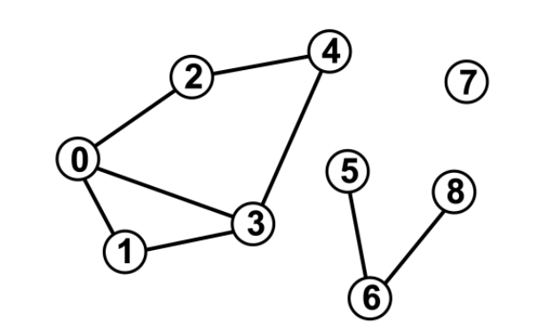
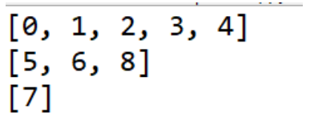

Lab 8: Graphs
Due Date and Submission Requirements
- Due Date: Friday, March 28th at 11:59 p.m.
- Partner Information: This is an individual assignment. You are allowed to collaborate with other students, but each student must submit their individual, independent solution.
- Submission Instructions: Upload your solutions (.java file), entitled UndirectedGraph.java to the BrightSpace(D2L) Lab 8 Dropbox.
The goal of this lab is:
- Create a graph, and traverse it to find some interesting information
Directions
Start with the code linked below. The UndirectedGraph class is the same one we wrote in class last week, however the UndirectedGraphDemo class has been updated to reflect the following undirected graph:

You will write the body for one method in this lab. Complete the body of the
printConnectedComponents() method so that it prints out each connected component as a set/list
of vertices in that connected component. You may add any other methods or data structures you need
to accomplish this task
A correct and valid output for the graph above could look something like this:
{0, 1, 3, 4, 2}, {8, 5, 6}, {7}
Note: the order of the listed connected components does not matter and the order of the vertices in the
connected components also does not matter.
Once you think you have your code working, try to add more edges/vertices to the graph to
verify the correctness of your method.
Required Output
When you run your program, it should print out the connected components of the graph. It does not
need to look exactly like this, but the actual components should be correct (once again, the order does
not matter).

Starting Code
Hints
You might think this seems tricky at first, but finding the connected components can be done by leveraging depth first search, and the visited[] ArrayList
- Consider using a HashSet to store the vertices of connected components
(HashSet<LinkedList<Integer>>)
- Consider using the depthFirst() method and visited[] array (several different times) to figure out which nodes
have been visited
Grading (10 points)
- Program identifies all connected components – 10 points
NOTE: If your code does not compile, correctness cannot be verified, and you won’t receive any points
for your code. Turn in code that compiles!